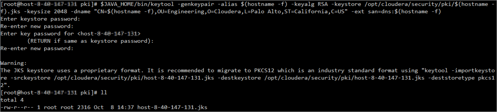
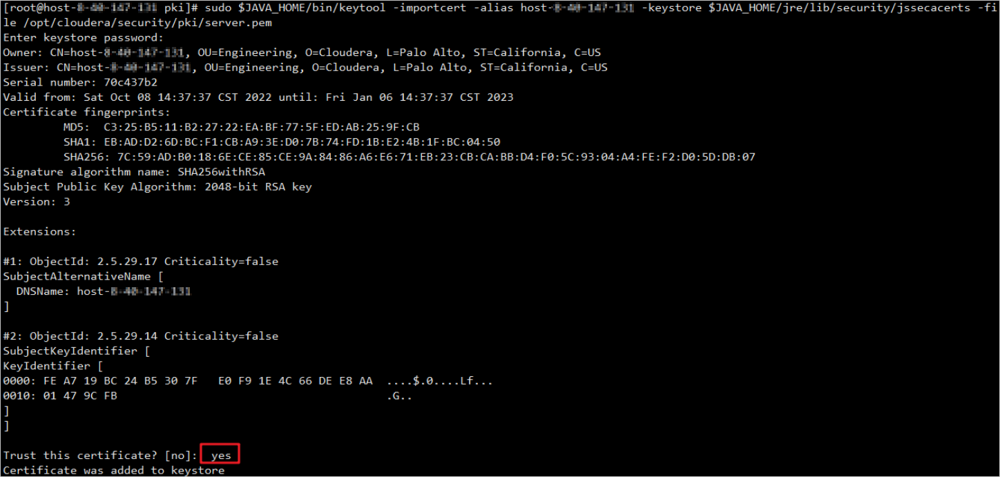
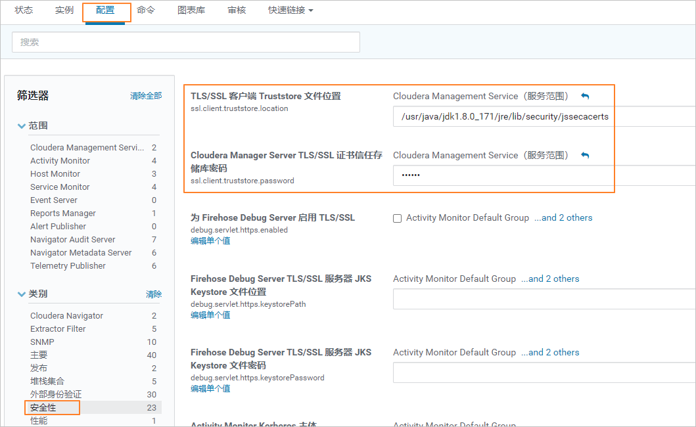

当大数据平台为Cloudera CDH，您可以导入Cloudera CDH的证书到本产品，以实现本产品与大数据平台的安全通信。本节介绍如何在Cloudera CDH生成并获取证书。非该场景请忽略本节。以下以Cloudera CDH 6.3版本为例说明，不同版本操作略有差异，请参考大数据平台对应版本的产品文档。
操作步骤
- 使用PuTTY，登录大数据集群中的任意节点。
- 检查Cloudera CDH平台是否已配置TLS/SSL，执行以下命令创建证书存放路径。
- 如果未配置TLS/SSL，执行以下命令创建证书存放路径并执行3~12。
mkdir -p /opt/cloudera/security/pki
- 如果已配置TLS/SSL。
- 如果不需要重新生成或配置证书，可向环境管理员获取相关文件与密码。
- 如果需要重新生成并配置证书，请参照以下步骤备份相关文件并执行3~12。
- 获取“hive.server2.keystore.path”配置路径，备份路径下所有文件，以下按照2相关配置举例。
mkdir -p /opt/cloudera/security/pki_bak; cp -r /opt/cloudera/security/pki/* /opt/cloudera/security/pki_bak
- 获取“HiveServer2 TLS/SSL 证书信任存储库文件”配置路径，备份路径下所有文件，以下按照2相关配置举例 。
mkdir -p $JAVA_HOME/jre/lib/security_bak; cp -r $JAVA_HOME/jre/lib/security/* $JAVA_HOME/jre/lib/security_bak
- 获取“hive.server2.keystore.path”配置路径，备份路径下所有文件，以下按照2相关配置举例。
- 如果未配置TLS/SSL，执行以下命令创建证书存放路径并执行3~12。
- 执行以下命令进入相应目录。
cd /opt/cloudera/security/pki
- 执行以下命令生成JKS证书。
命令执行过程中请设置keystore的密码。生成的JKS证书保存在当前节点的“/opt/cloudera/security/pki”目录。
$JAVA_HOME/bin/keytool -genkeypair -alias $(hostname -f) -keyalg RSA -keystore /opt/cloudera/security/pki/$(hostname -f).jks -keysize 2048 -dname "CN=$(hostname -f),OU=Engineering,O=Cloudera,L=Palo Alto,ST=California,C=US" -ext san=dns:$(hostname -f)

- 执行以下命令生成CSR证书。
$JAVA_HOME/bin/keytool -certreq -alias $(hostname -f) -keystore /opt/cloudera/security/pki/$(hostname -f).jks -file /opt/cloudera/security/pki/$(hostname -f).csr -ext san=dns:$(hostname -f) -ext EKU=serverAuth,clientAuth

- 依次执行以下命令生成PEM证书。
keytool -export -alias $(hostname -f) -keystore $(hostname -f).jks -file server.cer
openssl x509 -inform DER -outform PEM -text -in server.cer -out server.pem

- 执行以下命令校验证书。
openssl x509 -in /opt/cloudera/security/pki/server.pem -noout -text
- 执行以下命令将keystore的密码增加到Java安全库。
sudo cp $JAVA_HOME/jre/lib/security/cacerts $JAVA_HOME/jre/lib/security/jssecacerts
$JAVA_HOME/bin/keytool -storepasswd -keystore $JAVA_HOME/jre/lib/security/cacerts
$JAVA_HOME/bin/keytool -storepasswd -keystore $JAVA_HOME/jre/lib/security/jssecacerts
初始密码为“changeit”，按照回显提示修改密码为4中设置的密码。
- 执行以下命令将证书增加到Java安全库。
sudo $JAVA_HOME/bin/keytool -importcert -alias $(hostname -f) -keystore
$JAVA_HOME/jre/lib/security/jssecacerts -file /opt/cloudera/security/pki/server.pem

- 依次执行以下命令创建集群节点到证书的软连接。
sudo ln -s /opt/cloudera/security/pki/$(hostname -f).pem /opt/cloudera/security/pki/agent.pem
sudo ln -s /opt/cloudera/security/pki/$(hostname -f).jks /opt/cloudera/security/pki/server.jks
- 请依次登录其他Hive集群节点，重复执行1~10。
- 使用浏览器，登录Cloudera Manager修改Hive集群配置。
- 选择“群集 > Hive > 配置”。
- 依次单击“Hive(服务范围)”、“安全性”，配置以下参数。配置示例如图1所示。
- 勾选“Hive（服务范围）”
- “hive.server2.keystore.path”配置为“/opt/cloudera/security/pki/server.jks”
- “hive.server2.keystore.password”配置为4设置的密码。
- “HiveServer2 TLS/SSL 证书信任存储库文件”配置为“/usr/java/jdk1.8.0_171/jre/lib/security/jssecacerts”，其中，“jdk1.8.0_171”为Java版本号，请根据实际情况替换。
- 在Cloudera Manager首页，单击“Cloudera Manager Service”。
- 单击“配置 > 安全性”，配置以下参数。配置示例如图1所示。
- “ssl.client.truststore.location”配置为“/usr/java/jdk1.8.0_171/jre/lib/security/jssecacerts”。其中，“jdk1.8.0_171”为Java版本号，请根据实际情况替换。
- “ssl.client.truststore.password”配置为4设置的密码。

- 在“实例”页面，同步以上配置至各集群节点。
- 使用PuTTY，登录Hive集群管理节点，执行以下命令重启管理服务。
sudo systemctl restart cloudera-scm-server
- 使用浏览器，登录Cloudera Manager重启集群和管理服务。
- 选择“群集 > Hive”，在“操作”下重启Hive集群。
- 在首页，选择“Cloudera Management Service”，在“操作”下重启管理服务。
- 如果Hive集群中包括多个节点，需要将所有节点生成的JKS文件合并成一个JKS文件。否则请忽略该步骤。
- 把所有节点上“/opt/cloudera/security/pki”目录下的JKS文件，汇总在同一个节点上的该目录。
- 进入“/opt/cloudera/security/pki”目录，执行以下命令把所有节点上生成的JKS合并成一个证书。
以下命令表示把证书2合并到证书1，如果有多个节点，需要依次执行以下命令，把所有证书合并到同一个证书下。
keytool -importkeystore -srckeystore 证书1.jks -destkeysore 证书2.jks